ChordEdit 深读：为什么 one-step 图像编辑不能只做 prompt drift 相减？
导读。ChordEdit 真正要回答的问题不是“能不能更快生成一张编辑图”，而是：当生成模型已经被蒸馏成 one-step 路径时，传统 training-free 编辑里常用的 source/target drift 相减，为什么会在一步积分中突然变得危险？论文的回答是：这个差分场在 one-step 模型上是高能量、高方差、非平滑的；与其硬走这条噪声路径，不如把编辑重写成源分布到目标分布的低能量 transport，并用时间窗口平均构造 Chord Control Field。
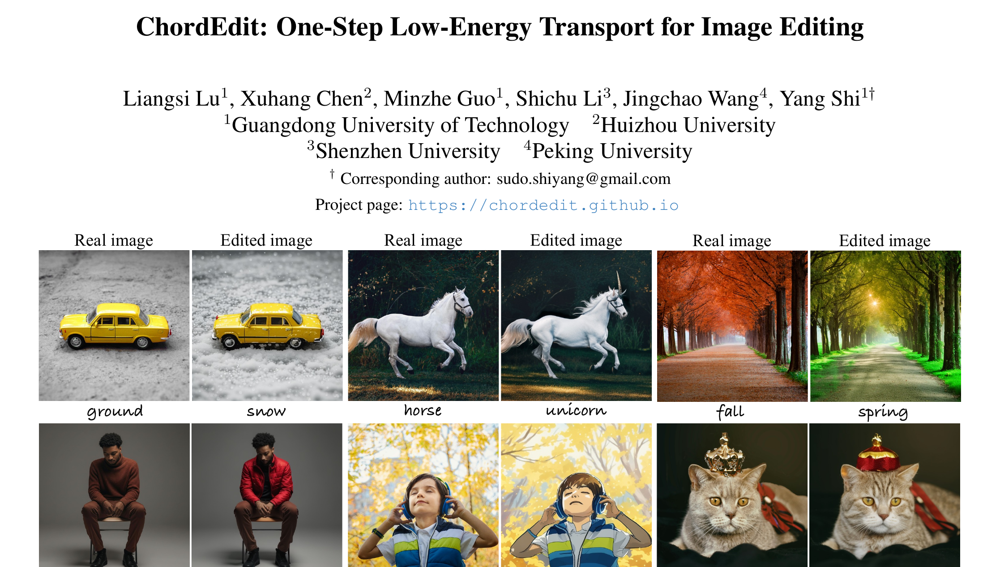
1. 核心问题：为什么 one-step 编辑会比 one-step 生成更难？
One-step T2I 模型把多步扩散/flow 采样蒸馏成一次大步前进，这让实时合成成为可能。但编辑不是从噪声到图像的普通生成，它要在“改目标语义”和“保留非编辑区域”之间同时满足约束。传统 training-free 路线通常在每个时间步计算 target prompt 与 source prompt 的 drift 差；多步时，误差可以被很多小步摊开，一步时，所有误差会被一次性放大。
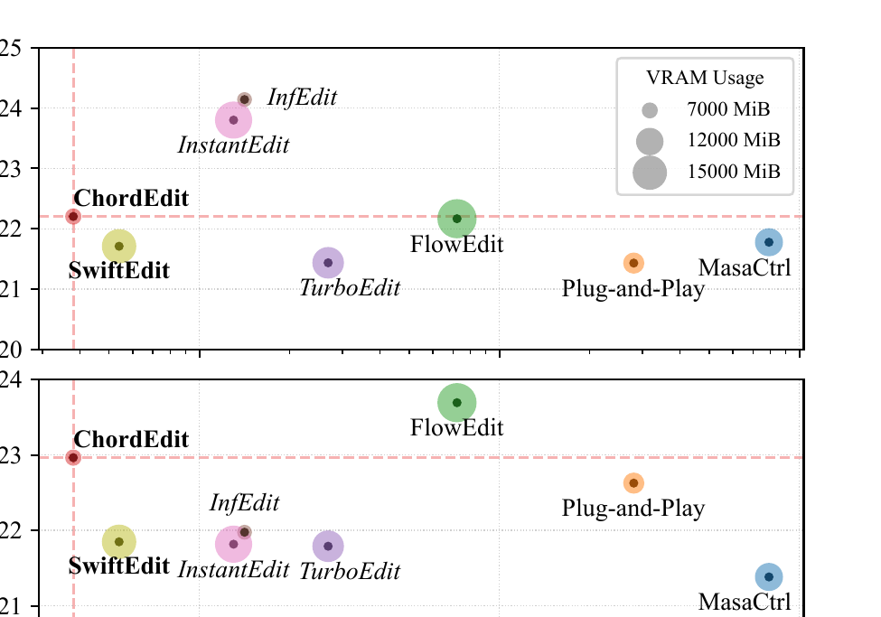
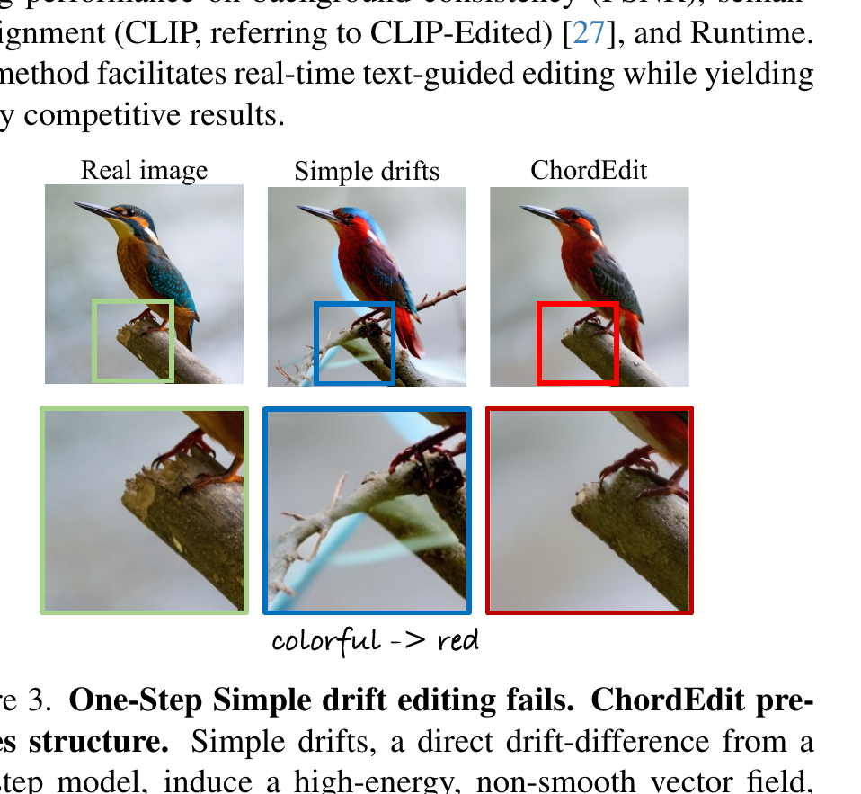
问：如果多步编辑已经能靠 drift difference 工作，为什么不直接把它压成一步？
引导：注意多步算法的稳定性来自“反复小步修正”，而 one-step 模型要求一次大步穿过高度非线性的场。
答：论文认为 naive residual field 在 one-step 模型上是 high-energy and irregular。一步积分时，这类场的局部误差无法被后续步骤纠正，于是表现为主体变形、背景崩坏和伪结构。
Takeaway：ChordEdit 不是在“减少步数”，而是在为 one-step 编辑重新定义一个能走大步的低能量控制场。
2. 整体解读与贡献：作者明确提出了什么，新意在哪里？
作者明确提出的贡献可以概括为三点：第一，把 one-step text-guided image editing 建模为源 prompt 分布到目标 prompt 分布的 transport 问题；第二，从 dynamic optimal transport 推导出时间加权平均的 Chord Control Field；第三，在 PIE-Bench 与多种 one-step/few-step/multi-step 编辑器上验证速度、保持质量、语义对齐与模型无关性。
读者能进一步推断的是：fast generative backbone 的可控性不等于直接可编辑性。模型在 one-step synthesis 中学到的是一条压缩过的生成路径；编辑控制需要处理这个路径的数值稳定性，而不是只做 prompt vector arithmetic。
| 路线 | 是否训练新模块 | 是否需要 inversion | 典型瓶颈 | ChordEdit 的取舍 |
|---|---|---|---|---|
| 多步 inversion-based editing | 通常不训练 | 需要 | 慢，且 inversion 误差会影响真实图编辑 | 放弃 inversion，追求实时交互 |
| few-step editing | 方法依赖具体 backbone | 常常需要或隐含重构 | 4-8 steps 仍不够“真实时” | 把 transport 压到 1-NFE，再可选 1-NFE prox |
| training-based one-step editing | 需要专用网络 | 依赖训练得到的 inversion/编辑器 | 模型无关性弱 | 只查询已有 one-step T2I 模型的 observable field |
| naive one-step drift difference | 不训练 | 不需要 | 高能量场导致背景破坏 | 用 Chord Control Field 做时间平滑 |
3. 数据集与任务：这里没有训练集，但有严格评测协议
ChordEdit 是 training-free / inversion-free 方法，因此没有新训练数据集，也没有预训练/微调阶段。论文的主要数据角色是评测：使用 PIE-Bench 作为 instruction-based image editing benchmark。论文说明该 benchmark 包含 700 个 512×512 样本，分布在 10 个编辑类别中；每个实例包含源图、文本 prompt 和用于区分编辑区/非编辑区的 ground-truth mask。
| 项目 | 论文披露 | 输入 → 输出 | 作用 | 缺失信息 |
|---|---|---|---|---|
| 编辑任务 | Text-guided real image editing | source image + source prompt + target prompt → edited image | 方法主体 | 论文未说明每个类别的完整样本分布细节 |
| PIE-Bench | 700 samples，10 editing categories，512×512 | 图像、prompt、mask → PSNR/MSE/CLIP 等指标 | 主评测 | 论文未说明是否对所有 prompt 做人工筛查 |
| 预训练 T2I backbone | SD-Turbo、SwiftBrush-v2、InstaFlow 等 | noisy state + condition → observable output / drift | 被查询的生成场 | 这些 backbone 的训练数据与算力不是本文贡献，论文未统一披露 |
问：没有训练集，为什么还要认真写“数据集与任务”？
答：因为 ChordEdit 的主张不是“训练一个更好的编辑器”，而是“给定已有 fast T2I 模型，也能稳定地做单步编辑”。因此评测集的 mask、prompt 与指标定义决定了论文证据是否能支持“保持非编辑区域”和“语义改变”这两个目标。
Takeaway：本文的数据核心是评测协议，不是训练监督。
4. Pipeline：从一张真实图到 one-step edit 发生了什么？
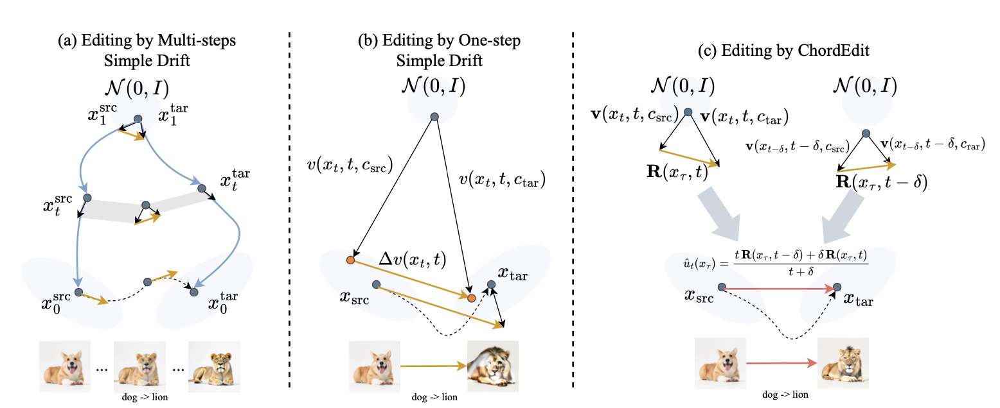
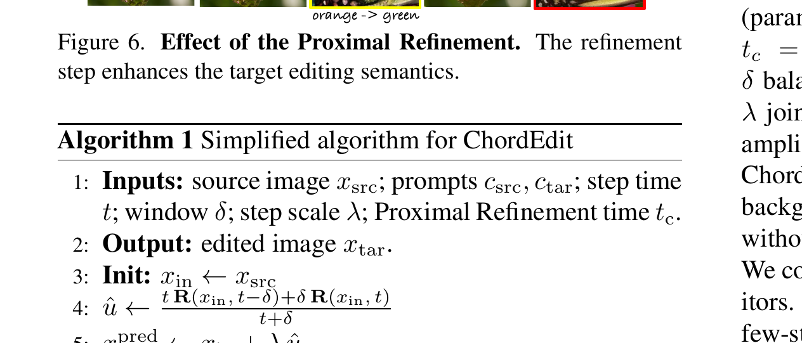
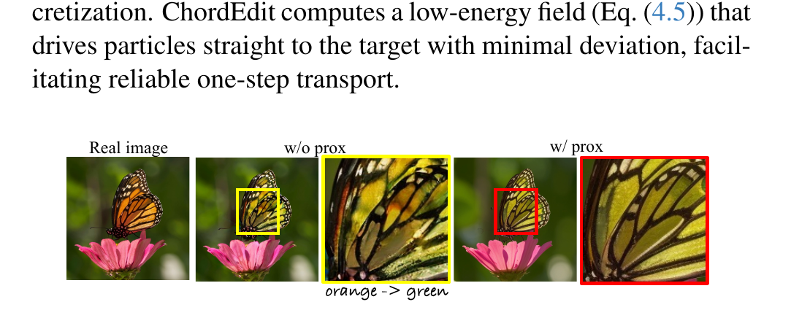
- 输入。源图 $x_{src}$、源 prompt $c_{src}$、目标 prompt $c_{tar}$，以及时间 $t$、窗口 $\delta$、步长 $\lambda$、refinement 时间 $t_c$。
- 查询场。在 VAE latent space 中对同一输入查询 source/target condition 下的 observable residual field。
- 构造 Chord field。用时间窗口平均替代瞬时差分，降低 field energy 和 variance。
- 单步 transport。一步移动到 $x_{pred}$。
- 可选语义增强。一次 proximal refinement 得到最终图。
问：如果去掉 Chord averaging，只保留 source/target drift 差分，会怎样？
答：它退化为论文中的 naive baseline。消融显示 naive 的能量在 step count 趋近 1 时会尖峰化，PSNR 随之崩塌；定性图则表现为背景和主体被同时破坏。
Takeaway：Pipeline 的关键不是多加一个后处理，而是把“一步编辑的控制信号”先变成可积分的低能量场。
5. 模型与方法：Chord Control Field 到底平滑了什么？
论文从 conditional probability flow 出发。预训练 T2I 模型在条件 $c$ 下诱导 drift $v(x_t,t,c)$，编辑直觉上是把 source prompt 下的流改成 target prompt 下的流。naive 方法直接用两者差分，但 ChordEdit 认为这个可观测差分含有噪声和高能量尖峰。
公式读法
$x_t$ 是时间 $t$ 的图像/latent 状态，$c_{src}$ 与 $c_{tar}$ 是源/目标 prompt。naive drift difference 看似直接，但在 one-step distilled model 中会成为高能量控制信号。
先把“能量”说清楚
本文语境下，控制场的“能量”可理解为其幅度与窗口内粗糙度：场越大、在 $[t-\delta,t]$ 上变化越剧烈，用 explicit Euler 走一步 $x_{in}+\lambda\hat{u}$ 时的截断误差就越大。naive $\Delta v$ 恰好在 one-step distilled model 上又大又抖，于是一步积分会放大它的尖峰。降低能量＝降低幅度与窗口内方差＝降低一步积分误差，这就是后面所有构造的目标函数。
ChordEdit 改为估计一个局部常量的低能量场 $u$。论文在短窗口 $[t-\delta,t]$ 上定义一个二次 surrogate：它既不要离上一个估计 $\hat{u}_{t-\delta}$ 太远，也要贴近当前窗口中的 observable proxy field $R(x_\tau,\xi)$。
式 2 → 式 3：一行求极值
$\Phi_t(\cdot\,;x_\tau)$ 是关于 $u$ 的严格凸二次型，令其梯度为零即可：$\partial_u\Phi_t = 2t\,(u-\hat{u}_{t-\delta}) + 2\int_{t-\delta}^{t}\!\big(u-R(x_\tau,\xi)\big)\,d\xi = 0$。窗口长度为 $\delta$，整理得 $(t+\delta)\,u = t\,\hat{u}_{t-\delta} + \int_{t-\delta}^{t}\! R\,d\xi$，正是式 3。所以式 3 不是凑出来的——它是“既贴近上一估计、又贴近窗口内观测”这一二次目标的唯一最优解。
从式 3 到式 4 用了两个显式近似：(i) 用窗口左端的可观测残差代替上一步估计，$\hat{u}_{t-\delta}\approx R(x_\tau,t-\delta)$；(ii) 用右端点做 causal 一阶近似积分，$\int_{t-\delta}^{t}\! R\,d\xi\approx \delta\,R(x_\tau,t)$。两者都假设 $R$ 在短窗口 $[t-\delta,t]$ 上足够平滑。代入式 3 即得最关键的 Chord Control Field：
公式读法
$R(x_\tau,t)$ 是在 anchor $x_\tau$ 上通过 noisy proxy 查询到的可观测残差场。式 4 本质上是对 naive field 的 causal one-sided smoothing：用 $t-\delta$ 与 $t$ 两个时刻的 observable residual 做加权平均。它的技术作用是降低尖峰能量，让 explicit Euler 的一步积分误差更可控。代价是上面那两个近似：当 $R$ 在窗口内突变（强结构边缘、剧烈语义跳变）时，左端不再代表上一估计、右端点也压不住中间尖峰，chord 会欠平滑——这正是后文能量图与消融要检验的边界。
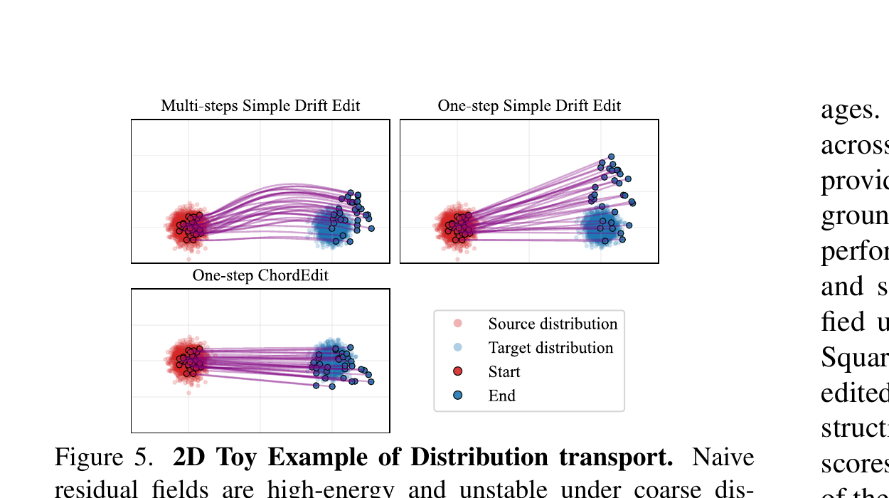
问：式 4 是不是只是“两个 drift 平均一下”的 heuristic？
引导：论文把它放在 dynamic OT 和局部 quadratic estimator 中，而不是单纯经验平滑。
答：不是。式 3 是式 2（严格凸二次目标）的唯一求极值解（见上方一行推导），式 4 只是它在“$R$ 窗口内平滑”假设下的两点 causal 近似。它能压尖峰，是因为凸权重平均 $\tfrac{t}{t+\delta},\tfrac{\delta}{t+\delta}$（和为 1）对窗口内 $R$ 做收缩，降低其幅度方差——也就是上文定义的“能量”被显式压低。代价正是那条平滑假设：$R$ 突变时近似失真，所以理论收益仍要靠后文能量图与消融来兜底。
Takeaway：ChordEdit 的新意在“低能量控制场的构造”，不是新训练一个编辑器。
6. 训练细节与算力账本：几乎没有训练账本，但有推理账本
这篇论文最特殊的一点是：ChordEdit 本身没有训练阶段。它不训练新网络，不做 inversion，也不做 fine-tuning；主要计算是对已有 one-step T2I 模型进行少量 forward query。因此训练账本应写成“论文未说明/不适用”，不能把 SD-Turbo、SwiftBrush-v2、InstaFlow 的预训练成本算到 ChordEdit 自己身上。
| 项目 | 论文披露 | 解释 | 缺失信息 |
|---|---|---|---|
| 训练 | training-free，无新模型训练 | 没有 optimizer、learning rate、epoch/steps | 不适用 |
| 硬件 | 所有实验在单块 NVIDIA Titan 24GB GPU 上完成 | 证明方法资源门槛相对低 | 完整 CPU/IO/环境时间未说明 |
| 默认超参 | $n=1,t=0.90,\delta=0.15,\lambda=1.00,t_c=0.30$ | $\delta$ 平衡稳定与语义强度；$t,\lambda,t_c$ 控制编辑强度和语义增强 | 不同类别是否使用同一超参，论文主表按默认报告 |
| NFE | transport-only 为 1-NFE；默认含 prox 为 2-NFE | 一轮 Chord transport + 可选一轮 refinement | 不同 backbone 的底层 kernel/吞吐细节未说明 |
| 速度/显存 | SD-Turbo 默认 ChordEdit：0.38s，6988MiB；w/o prox：0.20s，6988MiB | 真实交互的主要证据 | 不同 GPU 上的复测数据论文未说明 |
算力说明
不做 GPU-hours 估算，因为 ChordEdit 没有训练过程；预训练 T2I backbone 的训练成本不是本文披露数字。若要估计系统实际成本，应把 backbone 获取、推理硬件、批处理大小与 UI latency 分开统计。
7. 主实验：速度、语义、背景保持是否同时成立？
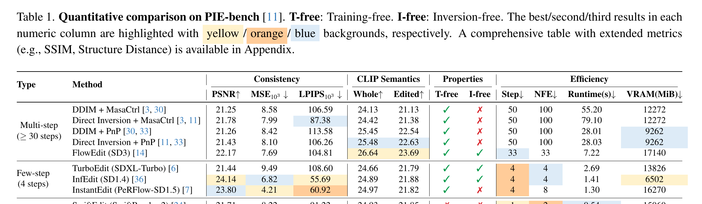
作者的结论并不是“所有指标第一”。更准确地说，ChordEdit 把效率、非编辑区域保持和语义对齐放在一个折中面上：w/o prox 更偏保持，w/ prox 更偏语义。读者应该特别看 ChordEdit 与 SwiftEdit 的同类 one-step 对比：SwiftEdit 需要训练/不满足 T-free/I-free，而 ChordEdit 在 0.38s 下保持训练无关和 inversion-free。
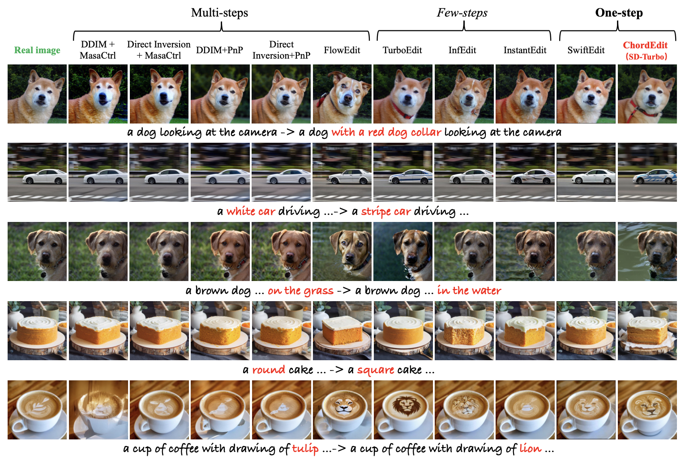
问：主表足以证明“最佳编辑方法”吗？
答：不应这样概括。表 1 更能证明 ChordEdit 在 one-step real-time setting 下非常强，尤其是 training-free / inversion-free / low VRAM 的组合。它不能证明在所有高分辨率、复杂遮挡、精确局部编辑或安全审查场景中都优于专用编辑器。
Takeaway：论文主张成立的边界是“fast one-step backbone 上的实时、轻量、无训练编辑”。
8. 消融：低能量场真的解释了结果吗？
8.1 Energy visualization：失败不是随机坏图，而是场不稳定
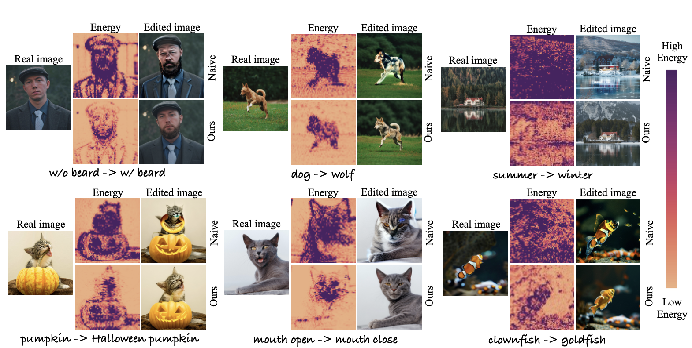
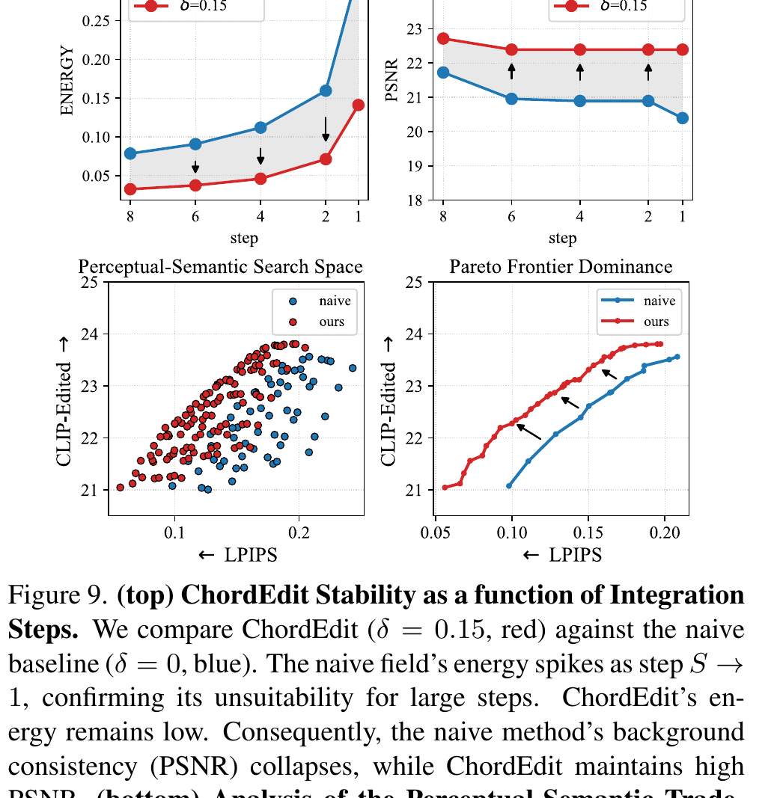
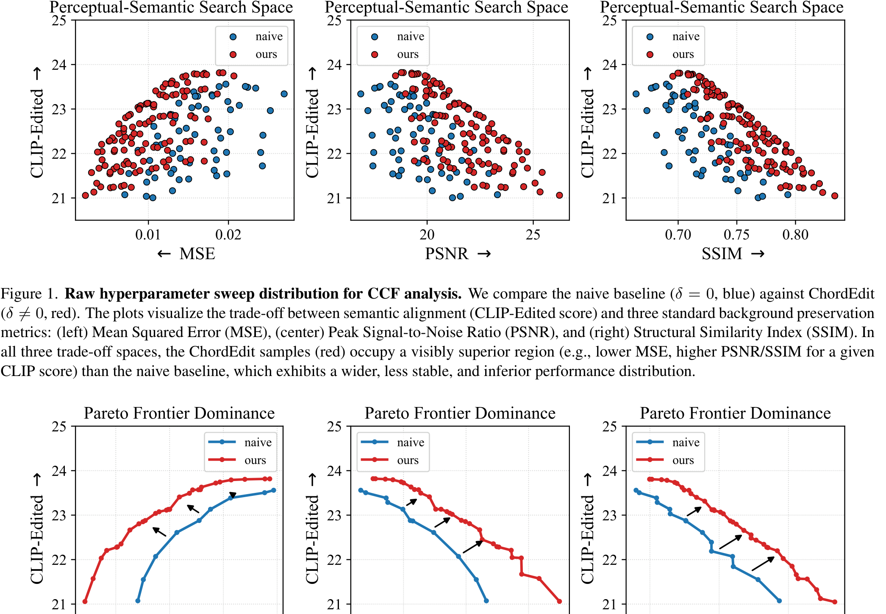
8.2 Noise ablation：为什么默认一个噪声样本也够？
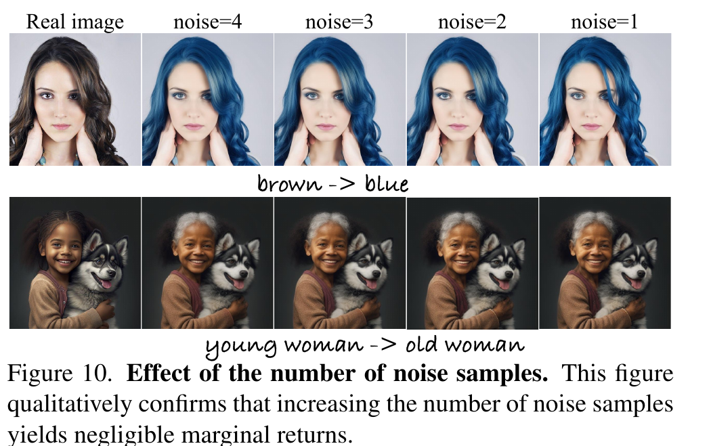
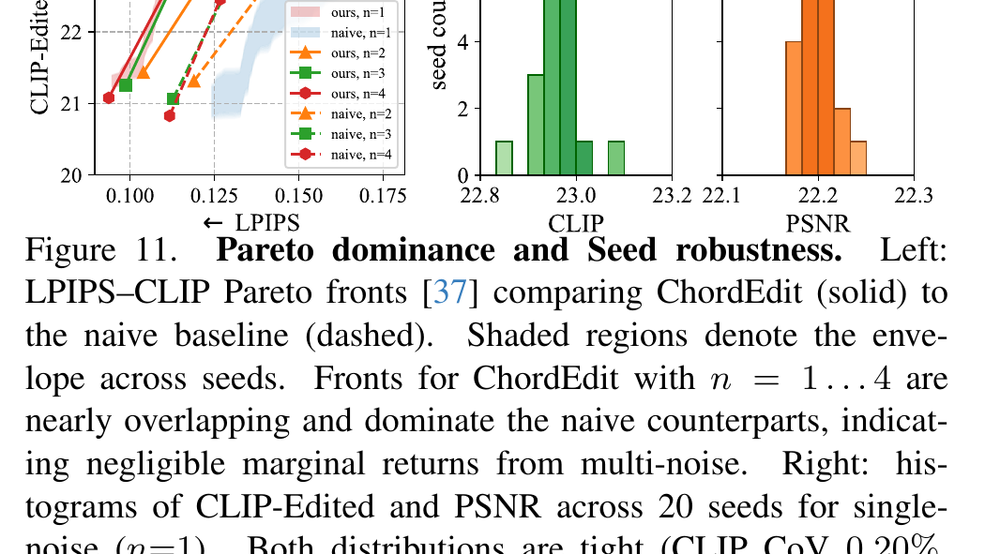
8.3 Transport 与 refinement：保持和语义是被拆开的
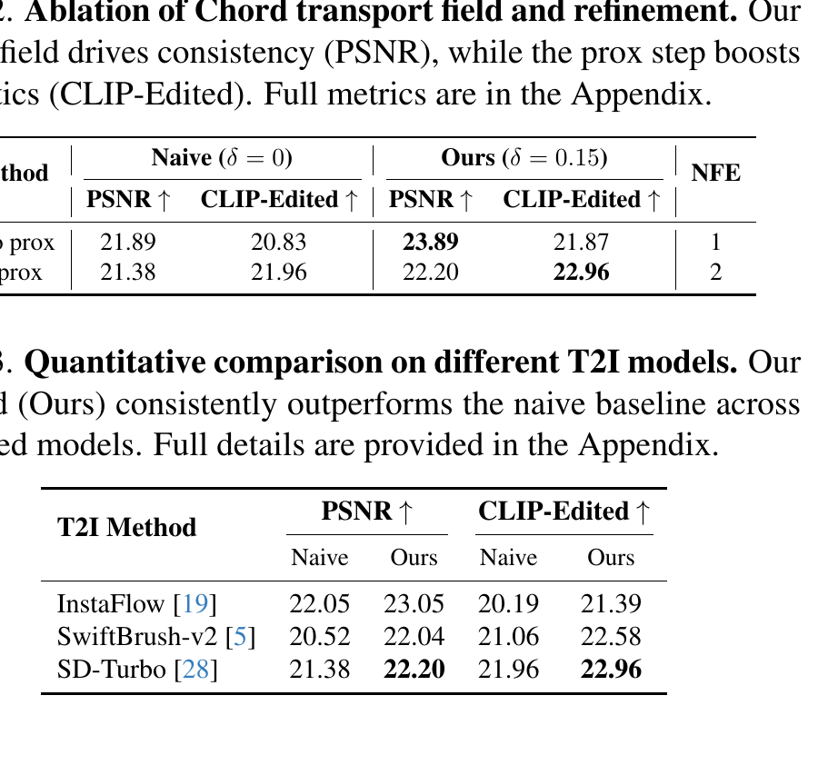
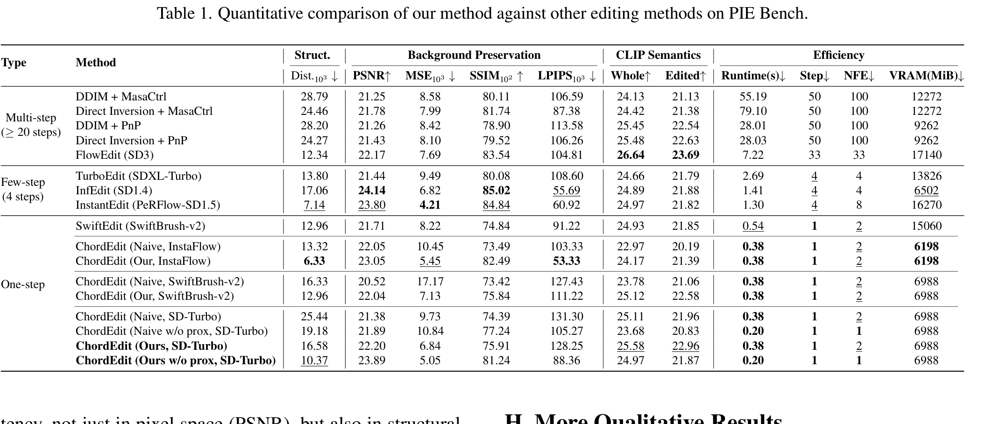
9. 用户研究与更多可视化：自动指标是否被人类偏好支持？
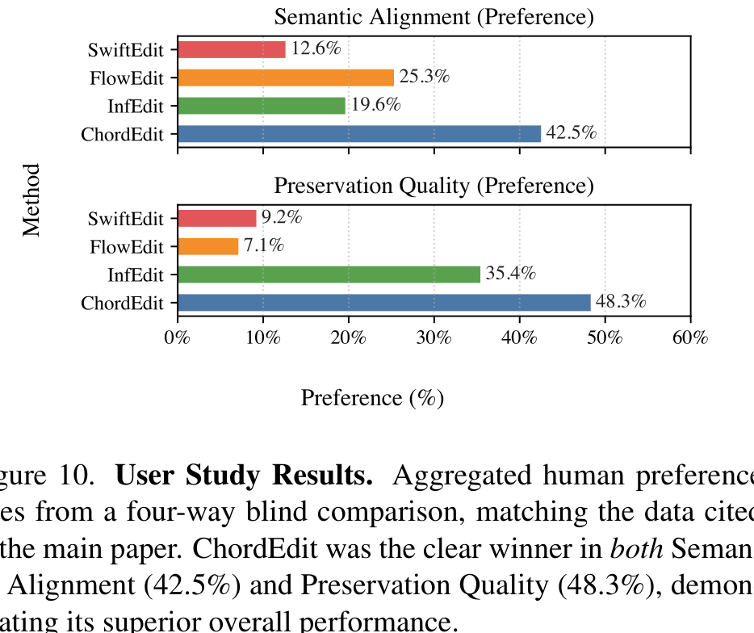

用户研究是对自动指标的有力补充，但也有边界：参与者看到的是有限 prompt、有限候选方法和固定展示形式；它说明 ChordEdit 在该设置下更受偏好，不等于真实内容生产流程中的所有编辑目标都更优。
10. 局限与复现门槛：什么时候要谨慎？
| 边界 | 论文/补充材料信息 | 读者应如何理解 |
|---|---|---|
| 依赖 backbone | 方法查询 SD-Turbo、SwiftBrush-v2、InstaFlow 等已有 fast T2I 模型 | 如果 backbone 对某类图像/语义本身弱，Chord field 无法凭空补全能力 |
| 语义-保持 trade-off | w/o prox 更保守，w/ prox 增强语义 | 不是单一超参解决所有编辑；真实应用可能要按任务调 $t,\delta,\lambda,t_c$ |
| 评测范围 | 主评测为 PIE-Bench 700 个 512×512 样本 | 高分辨率、视频一致性、精确局部 mask 编辑、复杂透明/文字编辑仍需额外验证 |
| 安全风险 | 补充材料承认高保真实时编辑可能被用于欺骗内容、 misinformation 或恶意媒体 | 低门槛实时编辑需要水印、检测、审计与使用规范配套 |
| 偏见继承 | 训练无关方法不会修正预训练 T2I 模型中的社会偏见 | prompt 与 backbone 偏差可能被编辑过程保留或放大 |
| 开源复现 | GitHub 给出 Python/PyTorch 与 SD-Turbo 权重依赖 | 复现主要难点不是训练，而是环境、backbone 权重、benchmark 协议和指标对齐 |
问：这篇论文最容易被过度宣传成什么？
答：容易被说成“0.38 秒完美编辑一切图像”。更严谨的说法是：在 one-step fast T2I backbones 与 PIE-Bench 设置中，ChordEdit 用低能量 transport 显著改善 naive one-step drift 的不稳定，并以低显存/低延迟达到很强的语义-保持折中。
Takeaway：强项是真实时、无训练、无 inversion；边界是 backbone 能力、任务分布和安全治理。
结语：几点学术判断
一句话总结：ChordEdit 的价值在于把 one-step image editing 从“prompt drift 相减”提升为“低能量 transport 控制”。它没有训练新模型，却通过 Chord Control Field 让已有 fast T2I backbone 的可编辑性变得更稳定。
- One-step 生成快，不代表 one-step 编辑天然稳定；编辑场的能量和方差是独立问题。
- Chord Control Field 的核心是时间窗口平滑与低能量估计，让一次大步积分更不容易破坏背景。
- 实验支持 ChordEdit 在实时、轻量、training-free/inversion-free 设置下很强，但不要把结论外推到所有编辑任务、所有分辨率和所有安全场景。
资料来源与图像说明
- Liangsi Lu, Xuhang Chen, Minzhe Guo, Shichu Li, Jingchao Wang, Yang Shi. ChordEdit: One-Step Low-Energy Transport for Image Editing. CVPR 2026 / arXiv:2602.19083.
- CVF Open Access paper and supplementary PDF；本文的公式、表格与实验数字以 PDF / Supplement 为准。
- 项目主页
https://chordedit.github.io/与 GitHubhttps://github.com/ChordEdit/ChordEdit用于核对项目图、代码入口、依赖与 demo 信息。 - 图像说明：所有正文图均保存为本地 PNG，来自 PDF/Supp 高 DPI 裁切或项目页原图，路径位于
assets/figures/chordedit/；GIF teaser 只抽取为 PNG frame sheet，不直接嵌入动画。